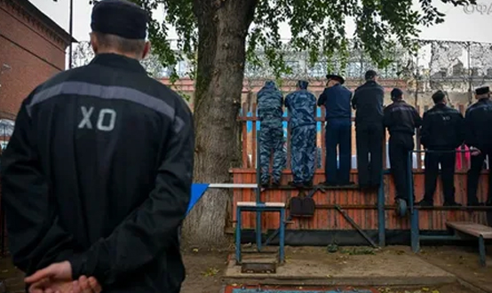

Конфискация имущества
ЦИТАТА
Конфискация имущества, согласно ст. 104.1. УК РФ, – это принудительное безвозмездное изъятие и обращение в собственность государства на основании обвинительного приговора имущества, связанного с совершенным преступлением.
Конфискации подлежат:
а) деньги, ценности и иное имущество, полученные в результате совершения преступлений (доходы от совершенного преступления, если оно было совершено из корыстных побуждений), любые доходы от этого имущества, за исключением имущества и доходов от него, подлежащих возвращению законному владельцу;
б) деньги, ценности и иное имущество, в которые имущество, полученное в результате совершения преступления, и доходы от этого имущества были частично или полностью превращены или преобразованы;
в) деньги, ценности и иное имущество, используемые или предназначенные для финансирования терроризма, экстремистской деятельности, организованной группы, незаконного вооруженного формирования, преступного сообщества (преступной организации);
г) орудия, оборудование или иные средства совершения преступления, принадлежащие обвиняемому;
д) транспортное средство, принадлежащее обвиняемому и использованное им при управлении транспортным средством в состоянии опьянения, если он уже был подвергнут административному наказанию или имеет судимость (ст. 264.1.–264.3. УК РФ).
Если осужденный успел передать подобное имущество третьему лицу, которое знало или должно было знать, что оно получено в результате преступных действий, такое имущество также подлежит конфискации.
Статья 104.2. УК РФ отдельно предусмотрела ситуацию, когда конфискация определенного предмета на момент принятия судом решения невозможна вследствие его использования, продажи или по иной причине. В таком случае суд выносит решение о конфискации денежной суммы, которая соответствует стоимости данного предмета. В случае отсутствия либо недостаточности денежных средств, подлежащих конфискации взамен предмета, суд выносит решение о конфискации иного имущества, стоимость которого соответствует стоимости предмета, подлежащего конфискации, либо сопоставима со стоимостью этого предмета, за исключением имущества, на которое в соответствии со ст. 446 ГПК РФ не может быть обращено взыскание (жилое помещение, предметы обычной домашней обстановки и обихода, вещи индивидуального пользования (одежда, обувь и другие), за исключением драгоценностей и других предметов роскоши и т.п.).
При решении вопроса о конфискации имущества в первую очередь должен быть решен вопрос о возмещении вреда, причиненного законному владельцу. При отсутствии у виновного иного имущества, на которое может быть обращено взыскание, кроме указанного выше, из его стоимости возмещается вред, причиненный законному владельцу, а оставшаяся часть обращается в доход государства.
Судебный штраф
С 2016 г. уголовное законодательство пополнилось новым видом освобождения от уголовной ответственности – освобождение от уголовной ответственности с назначением судебного штрафа (ст. 104.4. УК РФ). Главная цель этой меры – это защита обвиняемого от более жесткого вида наказания, если обвиняемый не представляет опасности для общества, т.е. гуманизация уголовного законодательства.
ЦИТАТА
Судебный штраф – это денежное взыскание, назначаемое судом при освобождении лица от уголовной ответственности, если лицо впервые совершило преступление небольшой или средней тяжести и возместило ущерб или иным образом загладило причиненный преступлением вред.
Назначая судебный штраф, судья должен учесть следующие обстоятельства:
- материальное положение обвиняемого и членов его семьи. Речь не идет об оплате родственниками штрафа, но если на иждивении у обвиняемого есть малолетние дети или иные лица, это необходимо учесть;
- тяжесть совершенного уголовно наказуемого деяния;
- существующие и возможные доходы обвиняемого;
- наличие или отсутствие в соответствующей статье Особенной части УК меры наказания в виде штрафа. При наличии такой меры судебный штраф не может составлять больше половины максимального размера штрафа, предусмотренного нормой Особенной части УК, по которой привлекается фигурант. Если же штраф как мера наказания не предусматривается, то размер судебного штрафа не может превышать 250 тыс. руб. (ст. 104.5. УК РФ).
Штраф должен быть уплачен в 30-дневный срок со дня вступления в силу решения суда. Гражданин может ходатайствовать о предоставлении рассрочки на выплату штрафа сроком до 36 месяцев. Применяя рассрочку, осужденный уплачивает первый платеж в качестве части штрафной выплаты, в течение первых 30 дней. В дальнейшем он обязуется вносить ежемесячно определенную сумму средств, определенную судом. Досрочное погашение допускается в рамках судебного штрафа.
В случае неуплаты судебного штрафа в установленный судом срок судебный штраф отменяется, и лицо привлекается к уголовной ответственности по соответствующей статье Особенной части УК РФ.